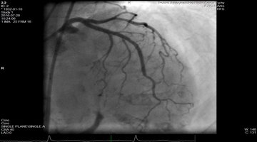

Zawał serca jest jedną z najczęstszych przyczyn zgonów w Polsce, warto zatem zastanowić się, czym jest zawał, jakie są jego objawy i co możemy zrobić żeby się przed nim uchronić. Serce jest mięśniem, którego funkcją jest pompowanie krwi w organizmie. Do prawidłowego działania potrzebne jest jego właściwe ukrwienie. Serce oplecione jest siecią naczyń krwionośnych, które dostarczają potrzebnych do jego funkcjonowania składników odżywczych. Są to tętnice wieńcowe. Zawał jest spowodowany zamknięciem jednej z tętnic oplatających serce. W obszarze mięśnia sercowego, do którego nie dopływa krew, dochodzi do obumierania komórek serca. Skutki takiego niedokrwienia będą zależeć od tego jak długo tętnica jest zamknięta, od jej wielkości i miejsca, w którym się zamknęła. Z każdą minutą powiększa się obszar „martwego” serca, w przyszłości w tym miejscu wytworzy się blizna pozawałowa. Będzie to miejsce, w którym mięsień sercowy nie będzie się kurczył prawidłowo, może to być przyczyną powstania niewydolności serca. Dlatego bardzo ważna jest natychmiastowa reakcja w trakcie pierwszych objawów zawału, transport do ośrodka kardiologii inwazyjnej i szybkie otworzenie zamkniętej tętnicy. Zawał serca jest stanem bezpośredniego zagrożenia życia. W trakcie zawału największym zagrożenie dla pacjentów są zaburzenia rytmu, takie jak migotanie komór, powodujące zatrzymanie pracy serca.
Jakie są jego objawy? Jak się zachować, jeśli mamy podejrzenie, że ktoś z naszych domowników/osoba spotkana na ulicy, miał zawał?
Nasz niepokój powinien wzbudzić silny, nagły ból w klatce piersiowej. Dolegliwości bólowe pojawiają się pod postacią ucisku, gniecenia lub pieczenia za mostkiem.
Kiedy możemy podejrzewać zawał serca? Nasz niepokój powinien wzbudzić silny, nagły ból w klatce piersiowej. Dolegliwości bólowe pojawiają się pod postacią ucisku, gniecenia lub pieczenia za mostkiem. Może im towarzyszyć promieniowanie do lewego barku, ramienia, pleców, szyi i żuchwy. W trakcie zawału dolegliwości te nie przemijają po odpoczynku i zażyciu nitrogliceryny. Niestety, nie zawsze zawał serca przebiega w tak spektakularny sposób. Odczuwane dolegliwości mogą mieć mniejsze nasilenie lub objawiać się w nietypowy sposób, na przykład opasającymi bólami w nadbrzuszu. U pacjentów z cukrzycą alarmujący ból może nie pojawić się w ogóle, głównym objawem będzie duszność. Pacjent z zawałem jest blady, spocony, odczuwa silny niepokój i lęk. Jeśli obserwujemy objawy mogące sugerować zawał serca powinniśmy zawiadomić zespół Pogotowia Ratunkowego. Już w karetce ratownicy medyczni po wykonaniu EKG mogą postawić prawidłowe rozpoznanie.
Leki i leczenie zabiegowe. Jakie działania podejmują specjaliści po stwierdzonym zawale?
Pacjent z rozpoznanym zawałem serca jest bezpośrednio transportowany do oddziału kardiologii inwazyjnej. Powiadomiony przez ratowników zespół w pracowni hemodynamicznej czeka już gotowości na przyjęcie pacjenta. Czas interwencji ma istotne znaczenie dla dalszego rokowania. Na sali zabiegowej znajduje się angiograf, który za pomocą promieniowania rentgenowskiego pozwala uwidocznić tętnice wieńcowe wypełnione specjalnym kontrastem. W ten sposób można znaleźć miejsce przewężenia lub zamknięcia w tętnicy. Lekarz wprowadza do tętnicy cienki drucik, na którym umieszczony jest mały balon. Poprzez rozprężenie balonika, próbuje się udrożnić chorą tętnicę. Następnie w to miejsce wprowadza się stent, można go przyrównać do małej sprężynki z długopisu. Rozprężony w tętnicy stent, stanowi rusztowanie zapewniające prawidłowy przepływ w naczyniu. Możemy spotkać się z określeniem stentów metalowych oraz stentów lekowych, takich, które uwalniają ze swojej powierzchni substancje mające zapobiegać zarastaniu tętnicy w miejscu wszczepionego stentu. Stosuje się również stenty biodegradowalne, stworzone z polimeru, który z czasem zupełnie zniknie ze światła naczynia. Gdy najbliższy ośrodek kardiologii inwazyjnej znajduje się daleko i niemożliwy jest szybki transport pacjenta, stosuje się specjalne leki, które mają za zadanie rozpuścić zakrzep w tętnicy wieńcowej. Leczenie zawału serca tą metodą stanowi mniej niż jeden procent wszystkich przypadków.

Zdjęcie nr.1
Zamknięcie gałęzi zstępującej przedniej lewej tętnicy wieńcowej u 84 pacjentki. Na zdjęciu można zauważyć prowadnicę hemodynamiczną przeprowadzoną poniżej okluzji w tętnicy.
Jak powinna przebiegać rehabilitacja pozawałowa?
Pierwszy etap rehabilitacji rozpoczyna się już w szpitalu, pacjenci wykonują ćwiczenia oddechowe i gimnastykę w obrębie łóżka. Pierwsze tygodnie po zawale serca mają istotne znaczenie dla gojenia się mięśnia sercowego. Po zawale pacjenci są kierowani do oddziałów rehabilitacji kardiologicznej w szpitalach sanatoryjnych. W trakcie trzech tygodni nie tylko odbywają rehabilitację ruchową, ale otrzymują możliwość zdobycia wiedzy na temat zdrowego stylu życia i prawidłowego odżywiania. Rehabilitacja skraca okres rekonwalescencji, pomaga w szybkim powrocie do aktywności zawodowej oraz pełni formę wsparcia psychologicznego.
Jak przedstawia się sytuacja w Polsce?
W ostatnich kilkunastu latach w Polsce dokonał się ogromny postęp w leczeniu zawału serca. Powstała sieć pracowni hemodynamicznych, w których jest możliwość zabiegowego otwarcia zamkniętej tętnicy w krótkim czasie. Dzięki zwiększeniu się liczby oddziałów kardiologii inwazyjnej, śmiertelność spadła kilkukrotnie. Według danych przeanalizowanych przez Narodowy Instytut Zdrowia Publicznego –PZH, w 2012 roku prawie 80 tyś. pacjentów było leczonych w szpitalu z powodu zawału serca. W oddziałach posiadających pracownie hemodynamiczną śmiertelność wyniosła 6%. Ponad dwukrotnie wyższą śmiertelność obserwowano w przypadkach, w których nie było dostępu do leczenia inwazyjnego. Roczna śmiertelność po wypisaniu ze szpitala wynosi w Polsce ok. 10%, 3 letnia - 20%. Co oznaczają te liczby dla nas? Polska na tle innych krajów Europejskich może pochwalić się sukcesem w leczeniu zawału serca, a my możemy być pewni, że jesteśmy leczeni według tych samych wysokich standardów i zastosowaniem najnowszych dostępnych metod.
Zdjęcie nr.2
Obraz tętnicy po udrożnieniu i założeniu stentu.
Jak możemy się przed nim bronić?
Przestać palić papierosy, zdrowo się odżywiać, uprawiać aktywny tryb życia, kontrolować ciśnienie tętnicze oraz przestrzegać zaleceń lekarskich odnośnie przyjmowanych leków i kontrolnych badań.
W ostatnich kilkunastu latach w Polsce dokonał się ogromny postęp w leczeniu zawału serca. Powstała sieć pracowni hemodynamicznych, w których jest możliwość zabiegowego otwarcia zamkniętej tętnicy w krótkim czasie. Dzięki zwiększeniu się liczby oddziałów kardiologii inwazyjnej, śmiertelność spadła kilkukrotnie. Według danych przeanalizowanych przez Narodowy Instytut Zdrowia Publicznego –PZH, w 2012 roku prawie 80 tyś. pacjentów było leczonych w szpitalu z powodu zawału serca. W oddziałach posiadających pracownie hemodynamiczną śmiertelność wyniosła 6%. Ponad dwukrotnie wyższą śmiertelność obserwowano w przypadkach, w których nie było dostępu do leczenia inwazyjnego. Roczna śmiertelność po wypisaniu ze szpitala wynosi w Polsce ok. 10%, 3 letnia - 20%. Co oznaczają te liczby dla nas? Polska na tle innych krajów Europejskich może pochwalić się sukcesem w leczeniu zawału serca, a my możemy być pewni, że jesteśmy leczeni według tych samych wysokich standardów i zastosowaniem najnowszych dostępnych metod.